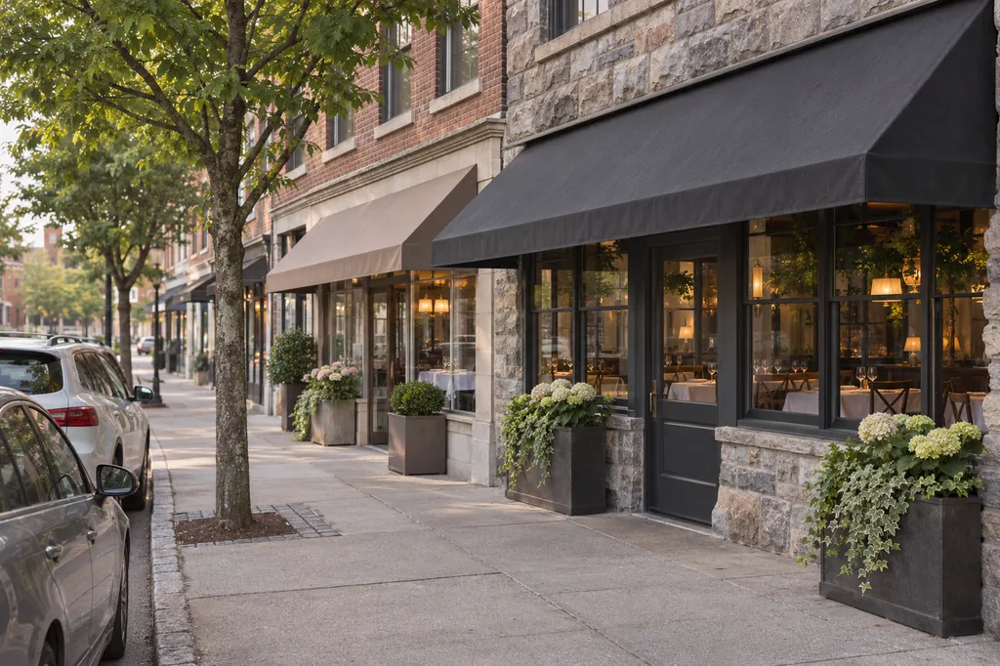

Service Area
Serving Westchester County and the Bronx
We repair and maintain commercial kitchen equipment for restaurants and commercial kitchens across Westchester County and the Bronx. Enter your service ZIP code in the request form, and dispatch will confirm coverage when they call.
Dispatch will call to confirm availability and next steps.

Areas we serve
-
Westchester County
Restaurants and commercial kitchens across Westchester County.
-
The Bronx
Restaurants and commercial kitchens across the Bronx.
Confirming coverage
How we confirm we can reach you
-
Enter your service ZIP code
Use the ZIP code where the equipment is located, not your billing address.
-
Dispatch reviews your request
Dispatch checks your location along with the equipment and problem you described.
-
Dispatch calls you
Dispatch calls to confirm availability and next steps.
Questions
Service area questions
How do I know if you serve my location?
Enter your service ZIP code in the repair request form. Dispatch will confirm coverage when they call.
My business is near the edge of Westchester County or the Bronx. Should I still request?
Yes. Submit the request with your ZIP code, and dispatch will let you know whether we can help.
I manage more than one location. How should I request service?
Submit a separate request for each location, using that location’s ZIP code, so dispatch has the right details for each job.
What happens after I submit a request?
Dispatch calls to confirm availability and next steps. See our process for what happens after that.
In Westchester County or the Bronx?
Five quick fields, about a minute. Dispatch will call to confirm availability and next steps.